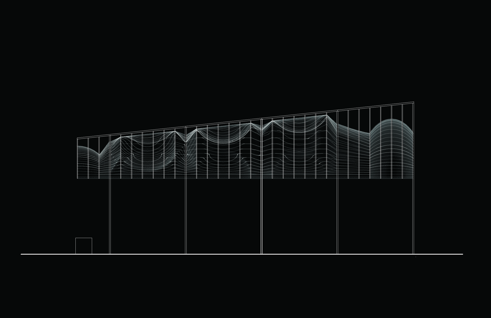

caesura: a forum
a public architectural and sound installation for Marcus Garvey Park, Harlem - Opening 20 June 2015, 3-6pm artists: Jessica Feldman, Jerome Haferd, and K. Brandt Knapp
fabricated with DASH 7 and supported by kammetal co-produced by Harlem Arts Festival, the Marcus Garvey Park Alliance, and the New York City Parks Department
caesura
noun
(in Greek and Latin verse) a break between words within a metrical foot.
• (in modern verse) a pause near the middle of a line.
• any interruption or break
About the Project
caesura: a forum is a temporary, site-specific architectural and sound installation on the Acropolis at Marcus Garvey Park in Harlem.
Visually and sonically, caesura draws from the social situation and built forms characterizing its location. The park’s Mount Morris hill, made of massive rock outcroppings is home to a large open space that overlooks Harlem called “the acropolis.” The height of the site made for an ideal location for a fire watchtower, and in 1857 the Harlem Fire Watchtower was built. It’s bell was rung to signal a fire by volunteer fire watchers. The tower has had a number of transformations through it’s life and is a local icon around which historic Harlem events have convened. Today, the bell is silent. The tower, the only one still in existence from it’s time period in NYC, was dismantled this spring for much needed restoration. The acropolis has incredible, expansive views. The tower’s restoration plans have brought increased interest to what had become an under utilized site and the acropolis is undergoing transformation as people have come to see it during the dismantling. The hope is that more Harlem residents, visitors and history enthusiasts will continue to appreciate the beauty of the acropolis. Without the draw of the Harlem Fire Watchtower itself, caesura endeavors to activate the site through viewing and listening reframing history with a temporary structure and sound. This piece is made possible through....
Architecture
The architectural component of this piece begins at the acropolis’ ground as an open air, steel frame, which supports a “horizontal tower” figuration, that the viewer can pass through and meander under. In the center of the piece, the “bell” made of mirrored steel reflects the sky to the south, where the tower stood, and the expansive view to the north of the city. Above, the rectilinear, exterior skeleton of the horizontal figure becomes a curvaceous form on the interior when the inhabitant looks up. The double-curved surfaces are seen through film tape, linear tubes and profiles of steel. Light and air movements dynamically open, pattern and break from the undulating form. Sonically, the skin resonates with voices and music and the “bell” rings with rhythm and chime by use of electromagnetic transducers attached in the fabric and on the steel. New and old histories recorded, spliced and digitally scripted together, activate the acropolis and pause throughout the day. listening . gathering . voicing .

Sound
The architectural component of this piece begins at the acropolis’ ground as an open air, steel frame, which supports a “horizontal tower” figuration, that the viewer can pass through and meander under. In the center of the piece, the “bell” made of mirrored steel reflects the sky to the south, where the tower stood, and the expansive view to the north of the city. Above, the rectilinear, exterior skeleton of the horizontal figure becomes a curvaceous form on the interior when the inhabitant looks up. The double-curved surfaces are seen through film tape, linear tubes and profiles of steel. Light and air movements dynamically open, pattern and break from the undulating form. Sonically, the skin resonates with voices and music and the “bell” rings with rhythm and chime by use of electromagnetic transducers attached in the fabric and on the steel. New and old histories recorded, spliced and digitally scripted together, activate the acropolis and pause throughout the day. listening . gathering . voicing .
source material:
- “Hon. Marcus Garvey on His Return to the U.S.A.,” July 1921
- “Explanation of the Objects of the Universal Negro Improvement Association,” July 1921
- field recording of BlackLivesMatter protest, Harlem, New York City, 23 December 2014
- various recordings of bells
Marcus Garvey speeches Copyright © 1995 The Marcus Garvey and UNIA Papers Project, UCLA
Opening & Press Preview
Saturday, June 20th 3:00pm - 6:00pm
Marcus Garvey Park
18 Mount Morris Park W, New York, New York 10027
Join us for the preview and opening of caesura, a major public architectural and sound installation for Marcus Garvey Park in Harlem. We will gather at the acropolis in the park from 3-6 pm. (rain date June 27)
This event will offer an informal setting to view the piece and witness the first demonstration of the sound installation, which resonates the entire structure. Bring a friend and a picnic basket, bring your voice and participate, and enjoy the beautiful view from the acropolis! An “open mic” with the piece will take place around 5pm.
Supporters & Special Thanks
Made possible with public funds from the Lower Manhattan Cultural Council, New York State Council on the Arts, New York City Department of Cultural Affairs.
Special Thanks to:
NYC Parks Department : Jennifer Lantzsas, Kieishsha Garnes, Arnyce Foster, and all Parks officials, electricians, and masons involved for their work, permitting, and production support.
Dash7Design: Mike O’Toole, Josh and Adam for extraordinary dedication, welding, and fabrication support
Kammetal: Alastair Kusack and the staff for laser-cutting services and excellent support
Harlem Arts Festival : Neal Ludevig, Chelsea Goding, Tania Balan-Gaubert
Marcus Garvey Park Alliance : Connie Lee and the members of the Alliance for dedication and support
Mount Morris Park Community Improvement Association
Harlem Arts Alliance
Lempira
Manhattan Tool Rental (www.manhattantool.com): logistical support and tool rental
Socrates Sculpture Park: John Hatfield, Lars Fisk, and staff for advising and general support
VViViDVinyl.com : Dave Fraser
Ash Kamel, web and production support
William and Laura Montgomery, David Blasher, Cory Coleman, Diego Arango, Felix Ciprian,
Harlem!